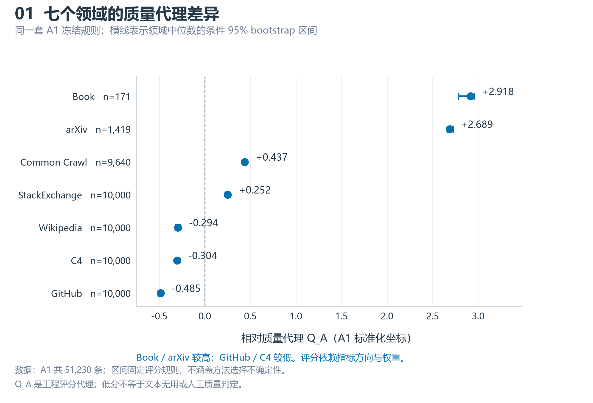
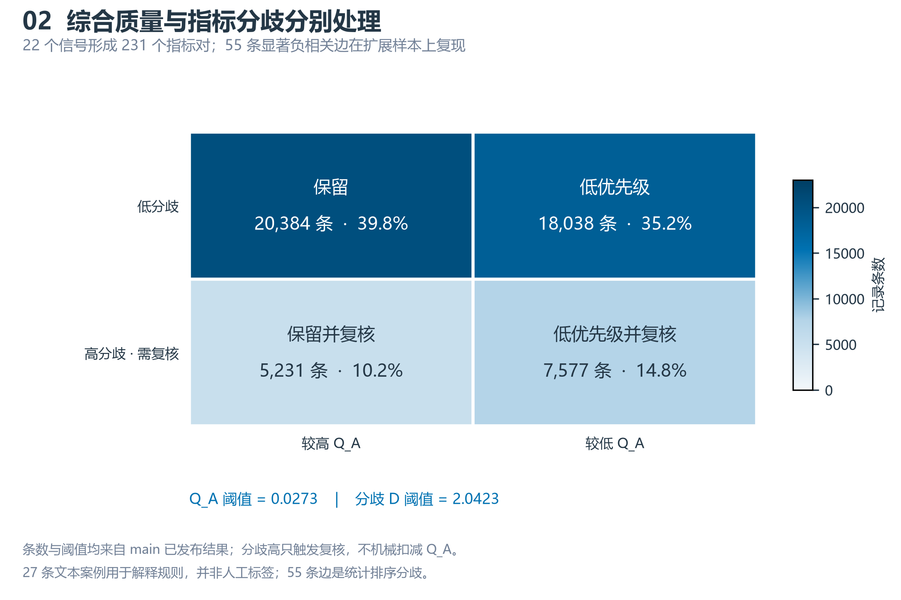
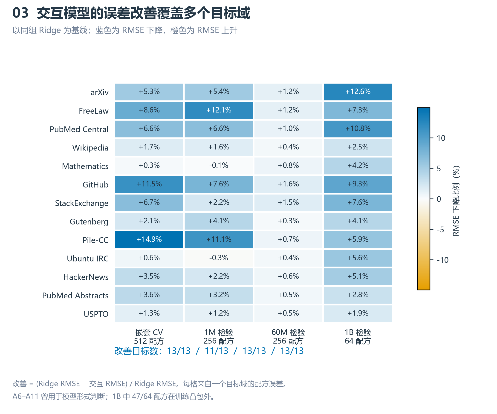
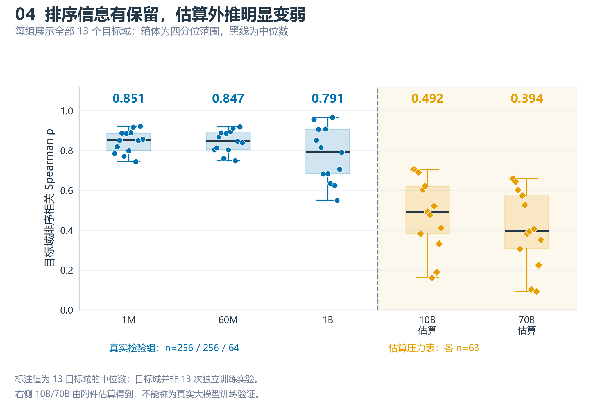
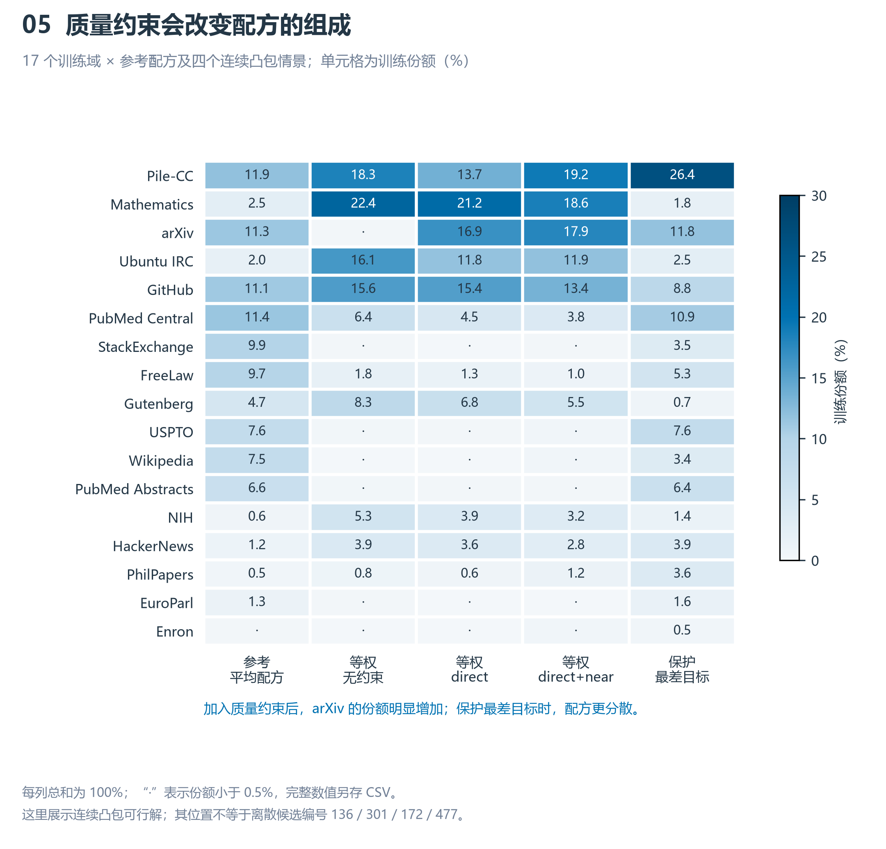
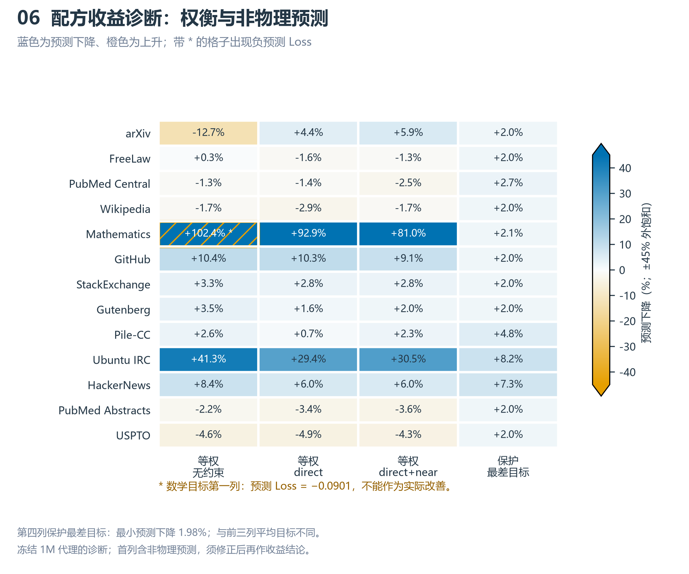
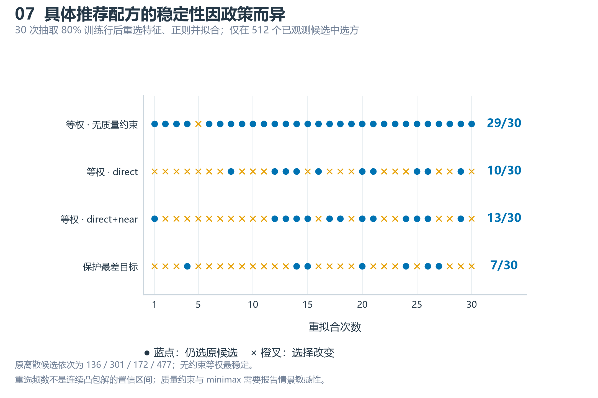
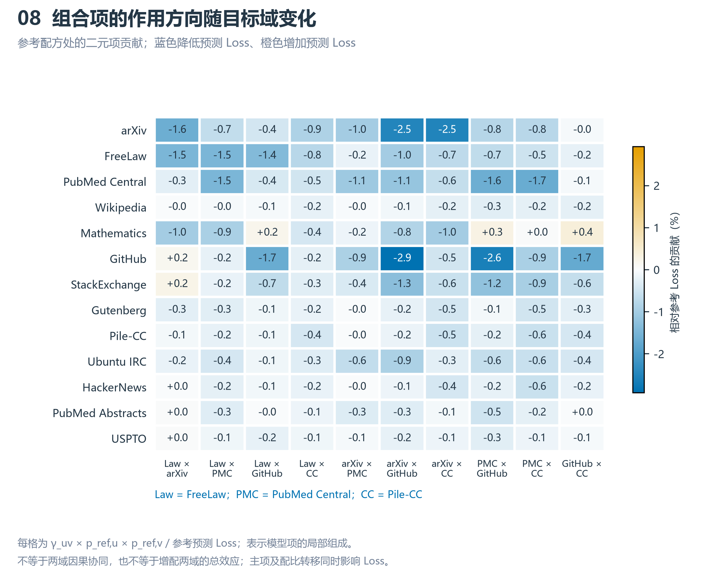

Q1 结果图册
依据 main @ a19039b 的冻结结果。蓝色表示结果主体，橙色表示估算、损失增加或选方改变。下载矢量图可直接用于后续排版。

数据：A1 共 51,230 条；区间固定评分规则，不涵盖方法选择不确定性。
Q_A 是工程评分代理；低分不等于文本无用或人工质量判定。

条数与阈值均来自 main 已发布结果；分歧高只触发复核，不机械扣减 Q_A。
27 条文本案例用于解释规则，并非人工标签；55 条边是统计排序分歧。

改善 = (Ridge RMSE − 交互 RMSE) / Ridge RMSE。每格来自一个目标域的配方误差。
A6–A11 曾用于模型形式判断；1B 中 47/64 配方在训练凸包外。

标注值为 13 目标域的中位数；目标域并非 13 次独立训练实验。
右侧 10B/70B 由附件估算得到，不能称为真实大模型训练验证。

每列总和为 100%；“·”表示份额小于 0.5%，完整数值另存 CSV。
这里展示连续凸包可行解；其位置不等于离散候选编号 136 / 301 / 172 / 477。

第四列保护最差目标：最小预测下降 1.98%；与前三列平均目标不同。
冻结 1M 代理的诊断；首列含非物理预测，须修正后再作收益结论。

原离散候选依次为 136 / 301 / 172 / 477；无约束等权最稳定。
重选频数不是连续凸包解的置信区间；质量约束与 minimax 需要报告情景敏感性。

每格为 γ_uv × p_ref,u × p_ref,v / 参考预测 Loss；表示模型项的局部组成。
不等于两域因果协同，也不等于增配两域的总效应；主项及配比转移同时影响 Loss。